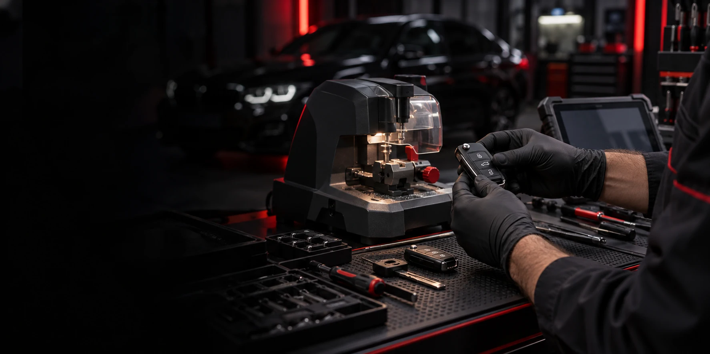

Cuéntanos qué ocurre
Indica el problema, tu ubicación y la marca, modelo y año del vehículo.
 CERRAJERÍALIMITED.672 826 060 ↗
CERRAJERÍALIMITED.672 826 060 ↗
CERRAJERÍA DE AUTOMOCIÓN · 24 HORAS
Llaves perdidas, un coche cerrado o un mando que no responde. Cerrajería Limited te ayuda a volver a tu camino en Guadalajara y Madrid.
Atención de urgencias
Asistencia con taller móvil
Llaves, cerraduras y electrónica
Presupuesto antes de intervenir
SOLUCIONES QUE TE DEVUELVEN EL CONTROL
Desde una copia de repuesto hasta una pérdida total. Encuentra el servicio que necesitas y cuéntanos qué ha pasado.
Recupera el acceso y el arranque de tu vehículo, incluso si ya no conservas ninguna llave.
Descubrir servicio ↗Una segunda llave, mandos y transponders: una solución adaptada al sistema de tu vehículo.
Descubrir servicio ↗Si la llave se ha quedado dentro, solicita una apertura profesional orientada a evitar daños.
Descubrir servicio ↗
CERRAJERÍA LIMITED / AUTOMOCIÓNUNA LLAVE MÁS. UN PROBLEMA MENOS.
Si solo tienes una llave, una copia de repuesto puede ahorrarte una situación incómoda. Podemos ayudarte con llaves mecánicas, mandos y sistemas con chip, según la compatibilidad de tu vehículo.
No todas las llaves son iguales. La marca, el modelo, el año y el sistema de arranque determinan el trabajo necesario. Te orientamos antes de decidir.
ASISTENCIA, PASO A PASO
Indica el problema, tu ubicación y la marca, modelo y año del vehículo.
Revisamos disponibilidad, compatibilidad y coste antes de iniciar el trabajo.
Realizamos la intervención y comprobamos contigo el funcionamiento de la llave o cerradura.
GUADALAJARA · COMUNIDAD DE MADRID
En casa, en un aparcamiento o allí donde se haya quedado tu vehículo. Consulta la disponibilidad del servicio móvil para tu ubicación.
RESPUESTAS PARA DECIDIR
La pérdida total de llaves es uno de nuestros servicios. La solución depende de la marca, modelo, año y sistema del vehículo; te pediremos esos datos para valorar el caso.
El precio depende de la llave, del trabajo de programación y de la situación del vehículo. Solicita un presupuesto personalizado antes de la intervención.
La atención de urgencias se anuncia las 24 horas. Llama para confirmar disponibilidad y desplazamiento en tu ubicación.
Atendemos distintas marcas y tipos de vehículos. La compatibilidad se confirma para el modelo y sistema concreto; envíanos los datos por WhatsApp.
TU VEHÍCULO NO TIENE POR QUÉ ESPERAR
Atención de urgencias 24 horas.
Consulta disponibilidad para tu ubicación.